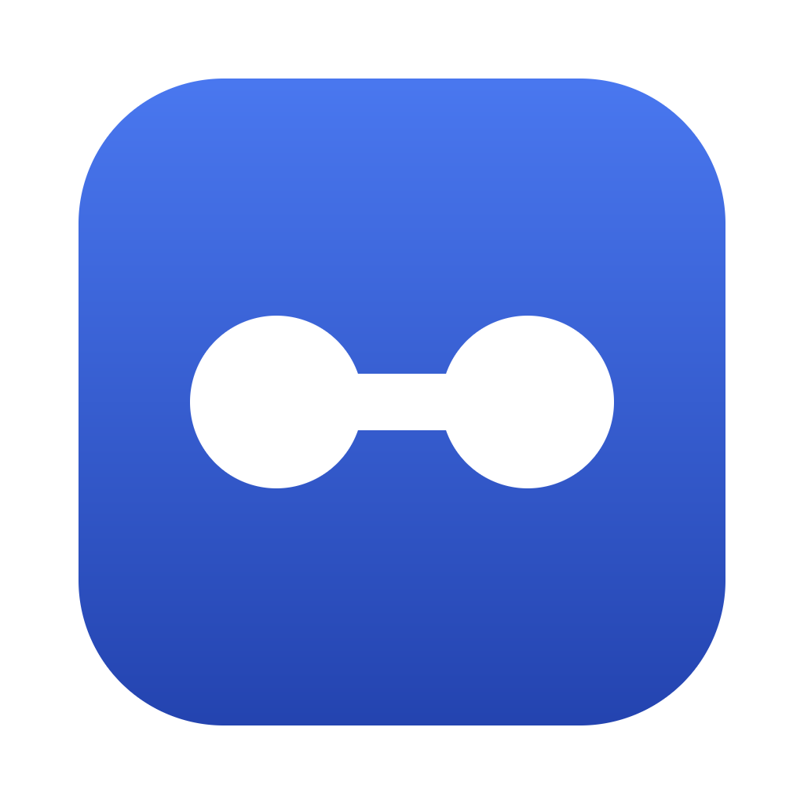

actp
ACP over HTTP
Run coding agents on one machine, use them from anywhere. Any ACP client can use Claude Code, Codex, Droid or Pi on another machine, as if it were local.
macOS, Linux and Windows · Apache 2.0
Why
Agents should run where the power, the code and the logins are. The apps that use them should run wherever suits them.
Nothing to change
Clients and agents both speak plain ACP. Your client starts actp instead of a local agent, and that is all.
Survives a closed lid
If the network drops, the agent keeps working. The bridge reconnects and catches up without losing a message.
A token per client
Each client gets its own token, limited to the agents and folders you choose. Revoke it at any time.
No server needed
A menu bar app with a built-in Cloudflare tunnel. Share the agents on your Mac in a few clicks.
How it works
Two machines, a few clicks or a few commands.
Share agents from the machine that has them
Open the actp app and choose Share agents: pick the agents, the folders they may work in, and a tunnel. Then create a token for each client. Or on a server:
actp token create --name laptop
actp serveAdd that server on the client machine
In the app, choose Use remote agents and add the URL and token. Or:
echo 'actp_…' | actp remote add workstation https://… --token-stdinPoint your ACP client at it
Use actp droid@workstation as the agent command, in any client that speaks ACP. To try it from a terminal first:
actp droid@workstation -p "Say hello and list the files here"Works with
Any agent that speaks ACP over stdio, with ready-made settings for these:
A client token lets its holder make these agents do anything your user can do on that machine. Share tokens only with clients you trust.
Get it
Download the app or the command line for your system from the latest release, or build it with Go:
go install github.com/varops/actp/cmd/actp@latestThe macOS app is not signed yet: the first time, right-click it and choose Open.